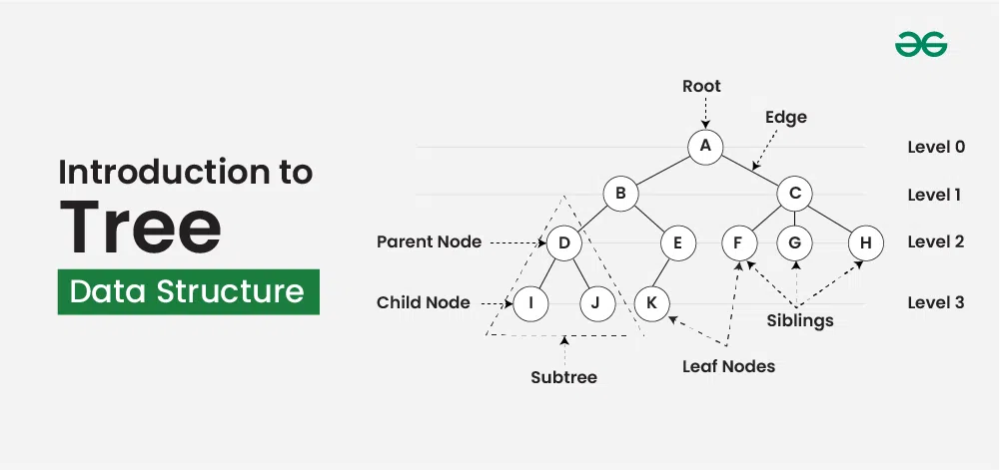
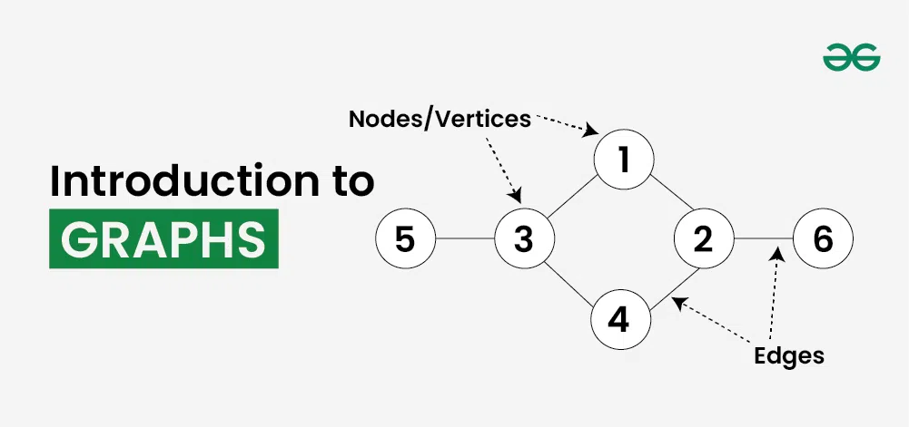

introduction to c++
C++ is a general-purpose programming language that was developed by Bjarne Stroustrup as an enhancement of the C language to add object-oriented paradigm.
Features of C++
- Simple: It is a simple language in the sense that programs can be broken down into logical units and parts, and has a rich library support and a variety of datatypes.
- Machine Independent: C++ code can be run on any machine as long as a suitable compiler is provided.
- Low-level Access: C++ provides low-level access to system resources, which makes it a suitable choice for system programming and writing efficient code.
- Fast Execution Speed: C++ is one of the fastest high-level languages. There is no additional processing overhead in C++, it is blazing fast.
basic syntax
#include <iostream>
using namespace std;
int main() {
cout << "Hello, World!";
return 0;
}
online c++ compiler
introduction to array
what is an array?
Array is a linear data structure where all elements are arranged sequentially. It is a collection of elements of same data type stored at contiguous memory locations.

Applications of Array Data Structure:
- Storing and accessing data: Arrays store elements in a specific order and allow constant-time O(1) access to any element.
- Searching: If data in array is sorted, we can search an item in O(log n) time. We can also find floor(), ceiling(), kth smallest, kth largest, etc efficiently
- Matrices: Two-dimensional arrays are used for matrices in computations like graph algorithms and image processing.
type of array
- 1D ARRAY
- 2D ARRAY
- 3D ARRAY
toutorial for array
Introduction to Tree
Tree data structure is a hierarchical structure that is used to represent and organize data in the form of parent child relationship. The following are some real world situations which are naturally a tree.

type of tree
- Binary tree: In a binary tree, each node can have a maximum of two children linked to it. Some common types of binary trees include full binary trees, complete binary trees, balanced binary trees, and degenerate or pathological binary trees. Examples of Binary Tree are Binary Search Tree and Binary Heap.
- Ternary Tree: A Ternary Tree is a tree data structure in which each node has at most three child nodes, usually distinguished as “left”, “mid” and “right”.
- N-ary Tree or Generic Tree: Generic trees are a collection of nodes where each node is a data structure that consists of records and a list of references to its children(duplicate references are not allowed). Unlike the linked list, each node stores the address of multiple nodes.
toutorial for tree
Introduction to Graph
Graph Data Structure is a non-linear data structure consisting of vertices and edges. It is useful in fields such as social network analysis, recommendation systems, and computer networks. In the field of sports data science, graph data structure can be used to analyze and understand the dynamics of team performance and player interactions on the field.

type of graph
- null graph: A graph is known as a null graph if there are no edges in the graph.
- trivial graph: Graph having only a single vertex, it is also the smallest graph possible.
- Undirected Graph
- directed Graph
- Connected Graph